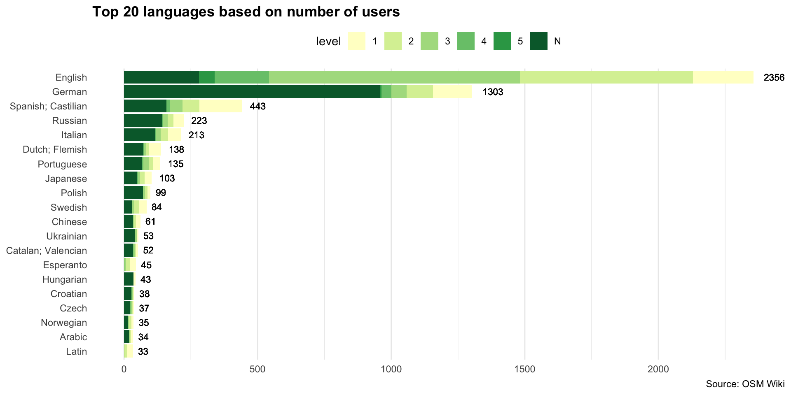
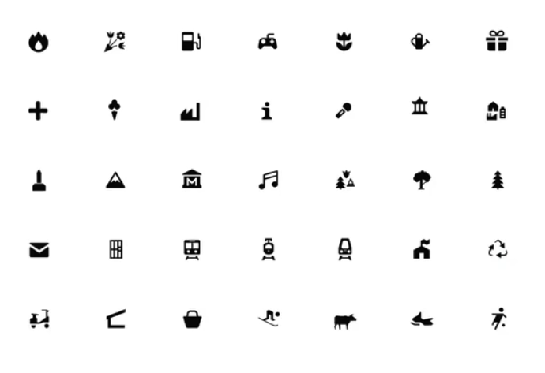

Maps, world-views and neutrality: squaring the circle?
Pint of Science 2025 | Dirty Duck, Coventry
How are maps made?
1. Geodesy
Is what figuring out where things are and how to record them. Focus is on mathematical foundations (coordinates, Earth’s shape).

This was once a huge scientific enterprise, today this is done by satellite and most of us, even very specialist geographers don’t have to think about it very much.
Keywords: precision, geolocation, GPS, LIDAR, coordinates system…
2. Cartogrpahy
Is how we visualize information about things in the world on maps .
The history of cartography is long and detailed, and the question of what was mapped by whom has dramatically shaped the modern world.
Keywords: projections, shapes, size, colour…
Who makes maps?
Governments

Motivation: public service
Official maps
- Ordnance Survey
- NASA
Companies
Motivation: Business model.
- Google, Microsoft, Apple…
- ESRI, Carto
- …
Specific, detailed maps, related to their business model.
Individuals!
Motivation: diverse Coverage and precision: diverse
- OpenStreetMap, “the wikipedia of the maps”
- …
Projections

No projection is perfect! Projection is an ‘unsolvable problem’ in that however we do it we are going to end up with some distortion somewhere on our map.
What is included (and what is not!)


Or take the example of a crime map. Usually expressed in maps like this. Without any context, as it crime simply happens in some places. How would the story change if displayed public investment, too …or worse, ethnicity?
Motivation
We wanted to understand how these decisions around mapping were impacting under-represented communities.
We wanted to study a particular type of digital good: OpenStreetMap, to understand how neutrality is used to favour or hamper equity.

Katherine d’Ignazio and Lauren Klein’s Data feminism design principles
OpenStreetMap (OSM)
OSM is the largest and most exhaustive collaborative map of the world.

Understanding community composition


Results are not representative, but significative: show a clear over-representation of certain demographics.
Inclusive cartographies
Planning a series of workhops aimed at creating maps that address particular needs of underrepresented minorities using data that is available in OpenStreetMap
Prompts:
Aim: what would you want the map to help you with?
Iconography: how are the icons being used?
Information being displayed or not: what do you want to be seen? How would you like it to be represented?
Audience:
People from non-hegemonic demographics (women, racialized, LGTBQ+) who feel that current maps do not sufficiently address their needs.
Map enthusiasts, Data visualization enthusiasts and OpenStreetMap users with a keen interest in EDI issues.
Activists, Researchers, or people sensitive to EDI issues and inequalities (we will particularly welcome people interested in issues related to gender, race or queer topics).
You are invited!

